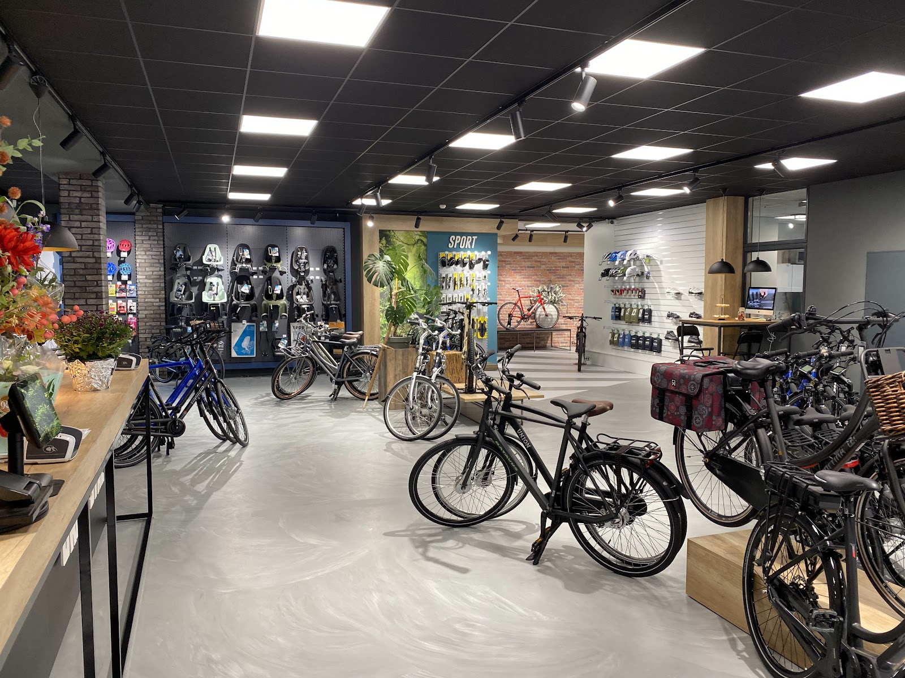
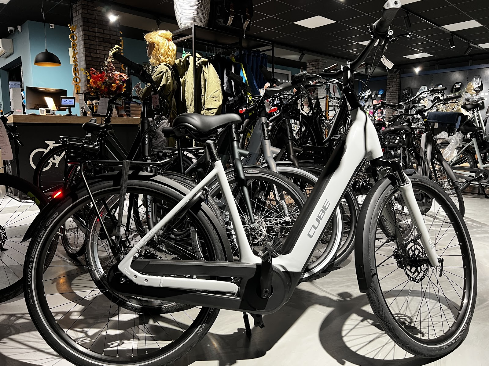
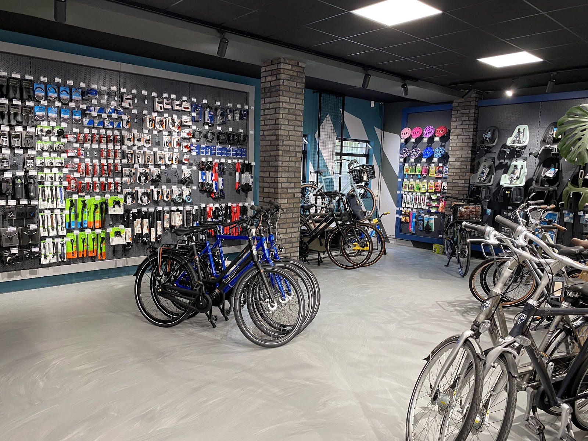
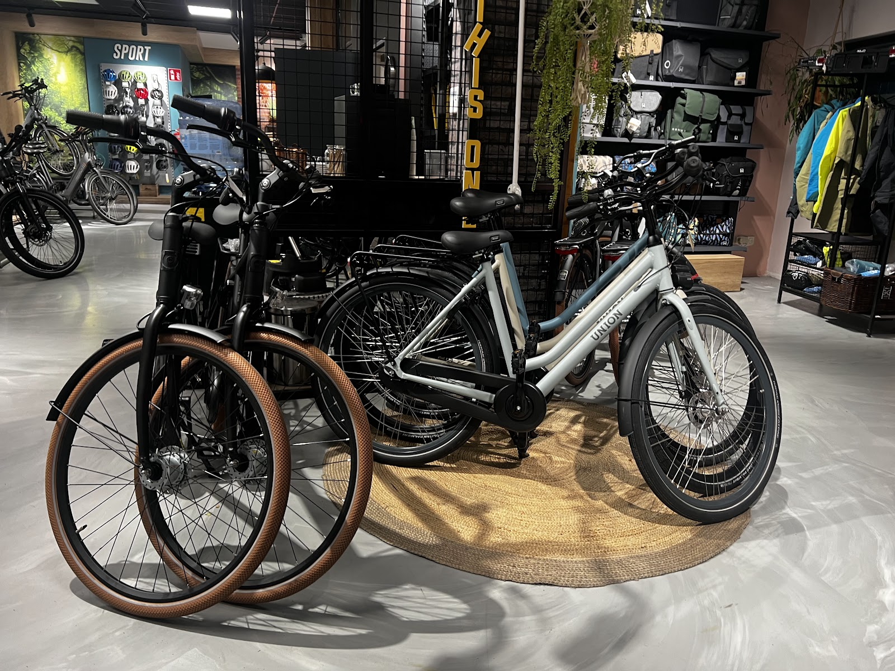
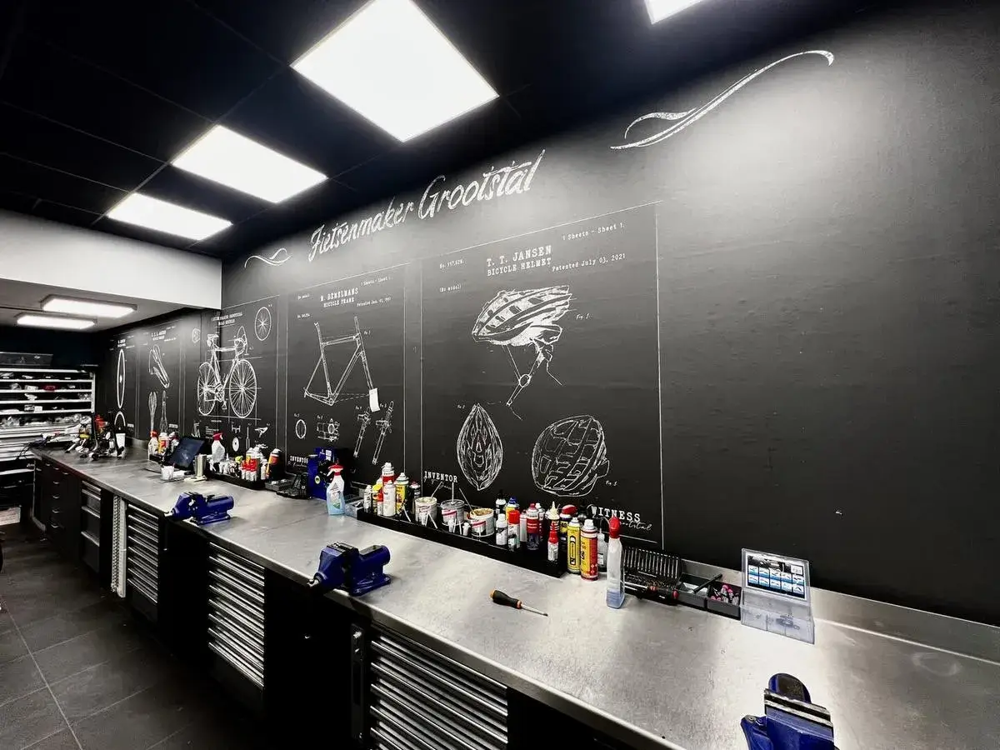
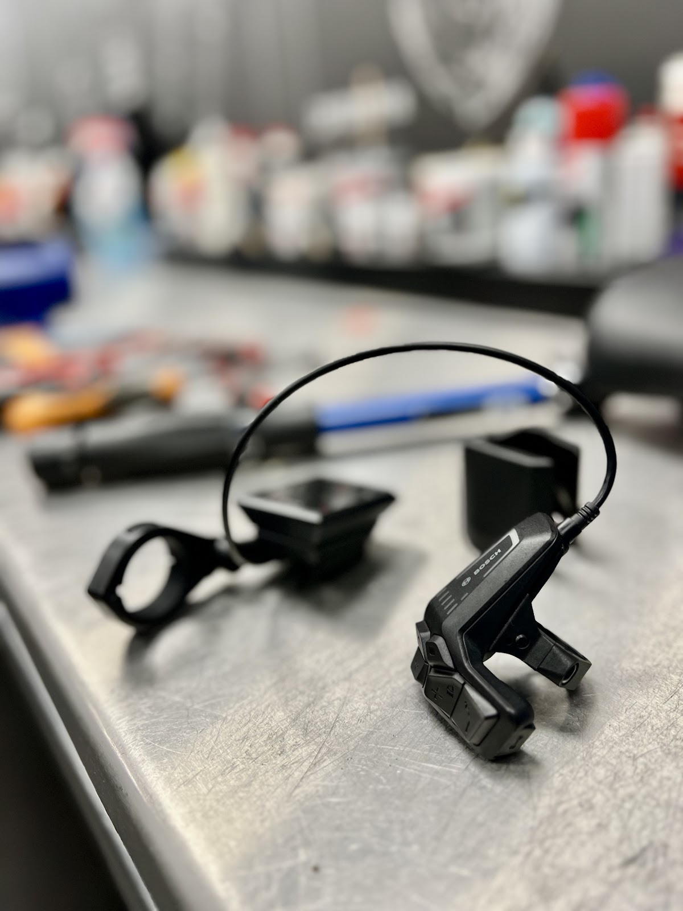
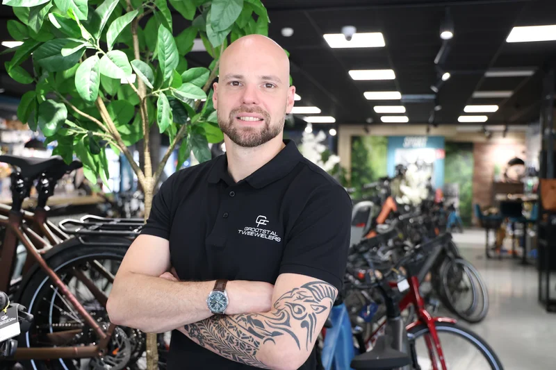
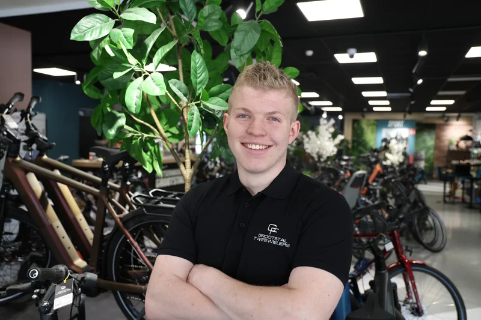
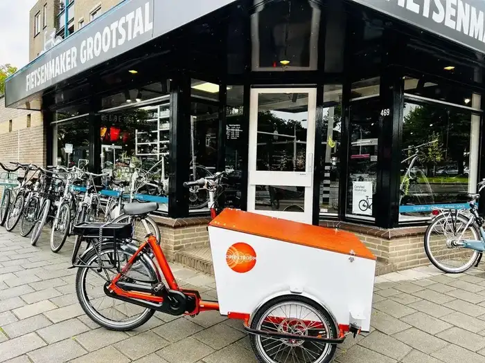

Fietsenmaker in Nijmegen-Zuid
E-bikes, stadsfietsen, transportfietsen en kinderfietsen, met een eigen werkplaats achter de winkel. Aan de Hatertseweg 469.
- Di t/m vr
- 09:00 tot 18:00
- Zaterdag
- 09:00 tot 17:00
- Zo en ma
- Gesloten

uit 151 Google-reviews
De winkel
Meer dan 50 e-bikes op voorraad om te bekijken en uit te proberen. Wij zijn niet merkgebonden, dus u krijgt advies over de fiets die bij u past, niet over het merk dat wij moeten verkopen.
- Stads e-bikeVoor woon-werkverkeer en boodschappen in Nijmegen. Comfortabele zithouding, lage instap mogelijk.
- Tour e-bikeVoor langere tochten door Gelderland. Grote actieradius en een stevige bagagedrager.
- Speed pedelecTot 45 km/u, ideaal voor forensen. Kentekenplichtig, met een krachtige motor.
Ook stadsfietsen, transportfietsen en kinderfietsen. Gratis proefrit, gratis thuisbezorgen.



Merken in de showroom
Batavus / RIH / Cube / Trenergy / Ridley / Gazelle / Sparta / Cortina / Giant / Trek / Victoria / Koga
Staat uw merk er niet tussen? Wij bestellen vrijwel elk A-merk voor u, met dezelfde service, garantie en nazorg.
Onze monteurs zijn gecertificeerd voor de motorsystemen van Bosch, Shimano en Bafang.
De werkplaats
Traditioneel vakmanschap en moderne techniek, aan zes werkplekken. Lekke band, versleten aandrijving of een e-bike die niet meer wil: breng hem langs of bel even.

- BOVAG erkendEerlijke prijzen, transparante offertes en garantie op reparaties en onderdelen.
- Gecertificeerde monteursZe volgen regelmatig bijscholing, ook voor Bosch, Shimano en Bafang.
- Alleen wat nodig isU hoort welke onderdelen echt vervangen moeten worden, en waarom.
- Elk merk welkomOok als u uw fiets ergens anders kocht, helpen wij u graag verder.

"Onlangs mijn gazelle laten opknappen. Nieuwe banden hele aandrijving, zadel en zadelpen, alle kabels en remblokken voor een zeer schappelijke prijs. Snel geholpen en gerepareerd. Fiets is weer als nieuw ook helemaal schoon gemaakt. Echt blij mee!"
Wie u in de winkel treft
Wat begon als de droom van één persoon, is uitgegroeid tot een hecht team van fietsliefhebbers. Wij zijn zelf fanatieke fietsers en nemen de tijd voor elke klant.


Wat klanten zeggen
4,7 uit 151 reviews op Google
"Hele goede fietsenmaker, kom er al jaren en reparaties zijn altijd zeer goed. Recent een nieuwe fiets gekocht, héél blij mee. Hier werken mensen met een groot hart voor fietsen en fietsers! Super service, ze willen je graag helpen. Voel me gezegend met zo'n goede fietsenmaker in de buurt!"
"Heb hier Klever N Pinion 45 gekocht. Super service en flexibiliteit in alle zaken die rondom een speed pedelec spelen. Professioneel en deskundig advies. Ik zou hen zeker aanbevelen."
"Kijk, zo kan het ook. Nette service en als je belt of iets op voorraad is dan is het er ook. Hier kom ik zeker terug als ik iets voor mij. Cube fiets gedaan moet hebben."
"Mijn fiets technisch in orde laten maken. Een krank en de trapas zaten niet lekker, slijtage, en deze is vakkundig vervangen. Erg goed om je fiets te laten keuren want er kunnen onveilige situaties ontstaan. Erg blij met deze fietsenmaker. Er wordt alleen van noodzakelijke onderdelen aangeraden deze te vervangen. Leve"
"Onlangs mijn gazelle laten opknappen. Nieuwe banden hele aandrijving, zadel en zadelpen, alle kabels en remblokken voor een zeer schappelijke prijs. Snel geholpen en gerepareerd. Fiets is weer als nieuw ook helemaal schoon gemaakt. Echt blij mee!"
Fiets van de zaak
Voor bedrijven en zzp'ers. Van één leasefiets tot een complete bedrijfsvloot: wij regelen het, inclusief onderhoud, verzekering en pechhulp.
Vertrouwd door bedrijven als Talis, Driestroom en Pluryn.
- 7%
- bijtelling. Fiscaal voordelig voor werkgever en werknemer.
- E-bike lease en fietsplan
- Individuele lease of een fietsplan via uw werkgever.
- All-in service
- Onderhoud, verzekering en pechhulp in één regeling.
- Leasepartners
- Onder andere Lease-a-Bike en Leasegemak.
Kom langs

Openingstijden
| Maandag | Gesloten |
| Dinsdag | 09:00 - 18:00 |
| Woensdag | 09:00 - 18:00 |
| Donderdag | 09:00 - 18:00 |
| Vrijdag | 09:00 - 18:00 |
| Zaterdag | 09:00 - 17:00 |
| Zondag | Gesloten |